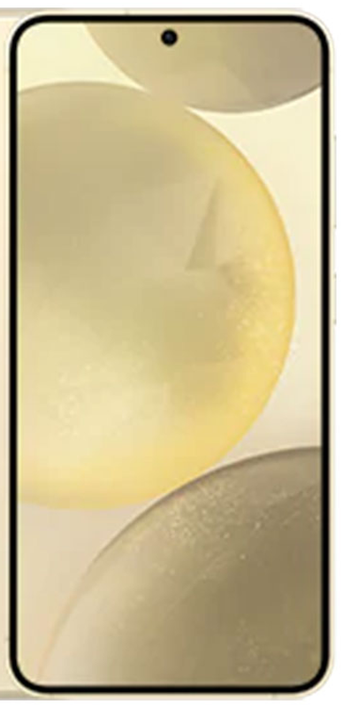
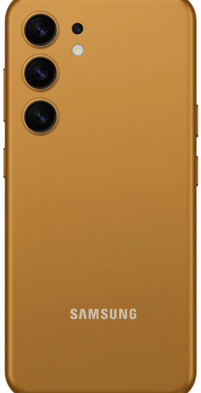
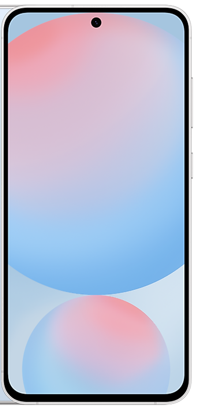
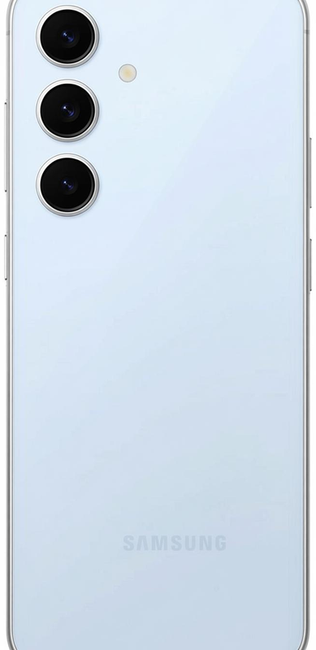
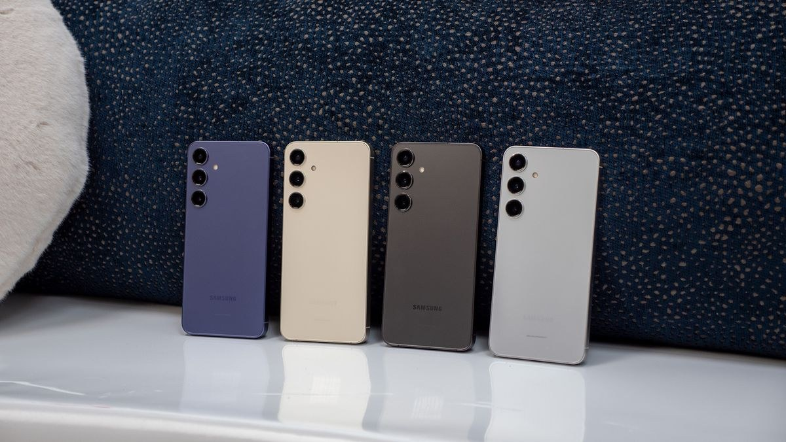
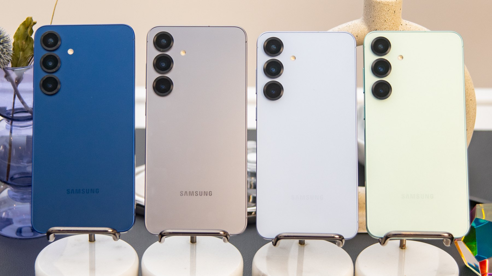

চিপ থেকে ক্যামেরা, RAM থেকে আপডেট পলিসি — প্রতিটি সূক্ষ্ম পার্থক্য ডেটা দিয়ে বিশ্লেষণ। সাথে স্পষ্ট উত্তর: কোন ফোন কার জন্য, এবং কেন।




ব্যস্ত? এই দুটি বক্স পড়লেই মূল সিদ্ধান্ত পরিষ্কার হয়ে যাবে। বিস্তারিত ডেটা নিচের প্রতিটি সেকশনে।
দুই প্রজন্মের নিজস্ব রঙের পরিচয়। স্ট্যান্ডার্ড ৪টি রঙ সব দোকানে, বাকিগুলো Samsung-এর অনলাইন এক্সক্লুসিভ।

* শুধু Samsung-এর অনলাইন স্টোরে

* শুধু Samsung-এর অনলাইন স্টোরে
যেকোনো সারিতে জয়ী দিকটি হাইলাইট করা আছে। ফিল্টার দিয়ে শুধু পার্থক্যগুলো বা শুধু মিলগুলো দেখতে পারেন।
| বিষয় | গ্যালাক্সি S24 | গ্যালাক্সি S25 |
|---|---|---|
| ডিজাইন ও বিল্ড | ||
| মাপ (উচ্চতা × প্রস্থ × বেড়) | ১৪৭.০ × ৭০.৬ × ৭.৬ মিমি | ১৪৬.৯ × ৭০.৫ × ৭.২ মিমি S25 সরু |
| ওজন | ১৬৭ গ্রাম | ১৬২ গ্রাম S25 হালকা |
| ফ্রেম | আর্মার অ্যালুমিনিয়াম | আর্মার অ্যালুমিনিয়াম (সংশোধিত অ্যালয়) |
| সামনে-পেছনে কাচ | গরিলা গ্লাস ভিক্টাস ২ | গরিলা গ্লাস ভিক্টাস ২ সমান |
| পানি-ধুলা রেটিং | IP68 | IP68 সমান |
| রঙ (স্ট্যান্ডার্ড + অনলাইন) | ৪ + ৩টি রঙ | ৪ + ৩টি রঙ |
| ডিসপ্লে | ||
| সাইজ ও ধরন | ৬.২″ ডাইনামিক AMOLED 2X | ৬.২″ ডাইনামিক AMOLED 2X সমান |
| রেজোলিউশন | FHD+ (২৩৪০ × ১০৮০) | FHD+ (২৩৪০ × ১০৮০) সমান |
| রিফ্রেশ রেট | ১–১২০Hz অ্যাডাপটিভ (LTPO) | ১–১২০Hz অ্যাডাপটিভ (LTPO) সমান |
| পিক ব্রাইটনেস | ২৬০০ nits | ২৬০০ nits সমান |
| মিডিয়া কোয়ালিটি | Vision Booster | Vision Booster + ProScaler আপস্কেলিং S25 |
| পারফরম্যান্স ও হার্ডওয়্যার | ||
| প্রসেসর | Exynos 2400 (৪nm, S5E9945) | Snapdragon 8 Elite for Galaxy (৩nm) S25 |
| CPU কনফিগারেশন | ১০-কোর, ৩.২GHz পর্যন্ত (X4 + A720 + A520) | ৮-কোর Oryon, ৪.৪৭GHz পর্যন্ত (২+৬) S25 |
| GPU | Xclipse 940 (AMD RDNA 3) | Adreno 830 S25 |
| RAM | ৮GB LPDDR5X | ১২GB LPDDR5X S25 |
| স্টোরেজ | ১২৮/২৫৬/৫১২GB — ১২৮GB ভ্যারিয়েন্টে ধীর UFS 3.1 | ১২৮/২৫৬/৫১২GB — সব ভ্যারিয়েন্টে UFS 4.0 S25 |
| কুলিং | ভেপার চেম্বার (ছোট) | আরও বড় ভেপার চেম্বার S25 |
| মাইক্রোSD স্লট | নেই | নেই সমান |
| ক্যামেরা | ||
| মেইন ক্যামেরা | ৫০MP, f/1.8, 1/1.56″, OIS | ৫০MP, f/1.8, 1/1.56″, OIS সমান |
| টেলিফোটো | ১০MP, f/2.4, ৩x অপটিক্যাল, OIS | ১০MP, f/2.4, ৩x অপটিক্যাল, OIS সমান |
| আল্ট্রাওয়াইড | ১২MP, f/2.2, ১২০° | ১২MP, f/2.2, ১২০° সমান |
| সেলফি ক্যামেরা | ১২MP, f/2.2 | ১২MP, f/2.2 সমান |
| ভিডিও | 8K 30fps • 4K 60fps • HDR10+ | 8K 30fps • 4K 60fps • HDR10+ সমান |
| ইমেজ প্রসেসিং | ProVisual Engine | নতুন ISP + Audio Eraser + উন্নত নাইট মোড S25 |
| ব্যাটারি ও চার্জিং | ||
| ব্যাটারি | ৪,০০০mAh | ৪,০০০mAh সমান |
| ওয়্যারড চার্জিং | ২৫W (PD 3.0 / PPS) | ২৫W (PD 3.0 / PPS) সমান |
| ওয়্যারলেস চার্জিং | ১৫W | ১৫W সমান |
| ম্যাগনেটিক (Qi2) | নেই | Qi2 Ready S25 |
| রিভার্স ওয়্যারলেস | ৪.৫W | ৪.৫W সমান |
| ব্যাটারি এনডিউরেন্স | ভালো | চিপের দক্ষতায় প্রায় ১ ঘণ্টা পর্যন্ত বেশি স্ক্রিন-অন S25 |
| সফটওয়্যার ও AI | ||
| লঞ্চে OS | Android 14 • One UI 6.1 | Android 15 • One UI 7 S25 |
| আপডেট নিশ্চয়তা | ৭ বছর OS + সিকিউরিটি (২০৩১ পর্যন্ত) | ৭ বছর OS + সিকিউরিটি (২০৩২ পর্যন্ত) S25 |
| Galaxy AI | Circle to Search, Live Translate, Generative Edit | + Now Brief, Gemini ক্রস-অ্যাপ, Audio Eraser, Personal Data Engine S25 |
| কানেক্টিভিটি | ||
| Wi-Fi | Wi-Fi 6E | Wi-Fi 7 S25 |
| ব্লুটুথ | ৫.৩ | ৫.৪ S25 |
| নেটওয়ার্ক | 5G • Dual SIM + eSIM • NFC | 5G • Dual SIM + eSIM • NFC সমান |
| UWB | নেই | নেই সমান |
| অডিও, সিকিউরিটি, অন্যান্য | ||
| স্পিকার | স্টেরিও, Dolby Atmos | স্টেরিও, Dolby Atmos সমান |
| ফিঙ্গারপ্রিন্ট | আল্ট্রাসনিক (স্ক্রিনের নিচে) | আল্ট্রাসনিক (স্ক্রিনের নিচে) সমান |
| 3.5mm জ্যাক | নেই | নেই সমান |
| লঞ্চ মূল্য (মার্কিন ডলার) | $৭৯৯ — ৮GB/১২৮GB | $৭৯৯ — ১২GB/১২৮GB একই দামে ৫০% বেশি RAM |
সূত্র: Samsung অফিসিয়াল স্পেক শিট ও প্রকাশিত রিভিউ ডেটার সমন্বয়। বেঞ্চমার্ক সংখ্যা আনুমানিক — ভ্যারিয়েন্ট ও সফটওয়্যারভেদে কিছুটা এদিক-ওদিক হয়।
S24 ও S25-এর মধ্যে সবচেয়ে বড় এবং দৈনন্দিন ব্যবহারেও অনুভূত পার্থক্য হলো চিপ। সাথে RAM ও স্টোরেজের গল্পও গুরুত্বপূর্ণ।
প্রতিটি জোড়ায় উপরের বার = S24 (Exynos), নিচের বার = S25 (Snapdragon)। স্কোরগুলো জনপ্রিয় রিভিউ সাইটগুলোর গড়-ভিত্তিক অনুমান; ডিভাইস, তাপমাত্রা ও সফটওয়্যার ভার্সনভেদে কিছুটা কম-বেশি হয়।
হার্ডওয়্যার হুবহু এক। পার্থক্য শুধু প্রসেসিং ও সফটওয়্যার ফিচারে — যা গুরুত্বপূর্ণ, কিন্তু সিদ্ধান্তমূলক নয়।
দুটোতেই ৪,০০০mAh ও ২৫W চার্জিং — কিন্তু চিপের দক্ষতার ফেরে S25 বাস্তবে বেশিক্ষণ চলে।
৩nm TSMC নোডে তৈরি Snapdragon 8 Elite প্রতি ওয়াটে বেশি কাজ করে — তাই একই ৪,০০০mAh ব্যাটারিতে S25 সাধারণত ৪৫–৭৫ মিনিট পর্যন্ত বেশি স্ক্রিন-অন টাইম দেয়। তবে দুটোই "একদিনের ফোন" — চার্জার ছাড়া দুই দিন ভাবা যাবে না। নিচে দুর্বলতার সেকশনে বিস্তারিত।
এক পলের ব্যবধানে কম ওজন, সাড়ে তিনের জায়গায় সাড়ে সাত মিমি বেড় — সংখ্যায় ছোট, অনুভূতিতে আসল।
বার-গুলো আপেক্ষিক; ১০০% = S24-এর মান। পার্থক্য সংখ্যায় ছোট হলেও এক হাতে দুটো ধরলে S25-কে সামান্য ঘন-গাঢ় ও হালকা লাগে। ডিসপ্লের মান, রং, ব্রাইটনেস ও ভিক্টাস ২ কাচ — দুটোতেই কার্যত একই; ফ্ল্যাট এজ, ছোট পাঞ্চ-হোল, প্রায় বিজেললেস।
দুটোই ৭ বছর OS আপডেট পাবে — স্যামসাং ইন্ডাস্ট্রির সেরা পলিসি। পার্থক্য শুরুর পয়েন্টে: S25 এক বছর পরে শুরু করে, তাই এক বছর পরে শেষ করে।
মানে: ২০৩২ সালে দাঁড়িয়ে S25 তখনও Android আপগ্রেড পাচ্ছে, S24 তখন সিকিউরিটি-প্যাচ-শেষ পর্যায়ে। দীর্ঘমেয়াদে ফোন রাখার প্ল্যান থাকলে এই এক বছর গুরুত্বপূর্ণ।
প্রতিটি ক্যাটাগরিতে বিজয়ী এক ঝলকে — ডেটা-ভিত্তিক চূড়ান্ত স্কোরবোর্ড।
প্রতিটি ফোনের পক্ষে-বিপক্ষে পূর্ণ তালিকা, সাথে দুটোরই সাধারণ দুর্বলতা — কেনার আগে অবশ্যই পড়ুন।
নিজের সাথে মিলিয়ে দেখুন — সঠিক উত্তর ব্যক্তির প্রয়োজনের উপর নির্ভর করে, শুধু "নতুন" হওয়ার উপর নয়।
লঞ্চে দুটোর দাম এক — কিন্তু সময়ের সাথে গল্প বদলেছে। ভ্যালু হিসাব করলে ছবি পরিষ্কার।
S25 প্রযুক্তিগতভাবে সামগ্রিক বিজয়ী — চিপ, RAM, কানেক্টিভিটি, AI ও সাপোর্ট মেয়াদে। কিন্তু "কোনটা কিনব" প্রশ্নের সঠিক উত্তর আপনার বাজেট ও ব্যবহারের উপর — আর সেখানেই S24 আজও অত্যন্ত শক্তিশালী প্রতিযোগী।
স্কোরগুলো এই পেজের বিশ্লেষণ-ভিত্তিক মূল্যায়ন (সর্বোচ্চ ১০) — কোনো প্রতিষ্ঠানের অফিসিয়াল রেটিং নয়।